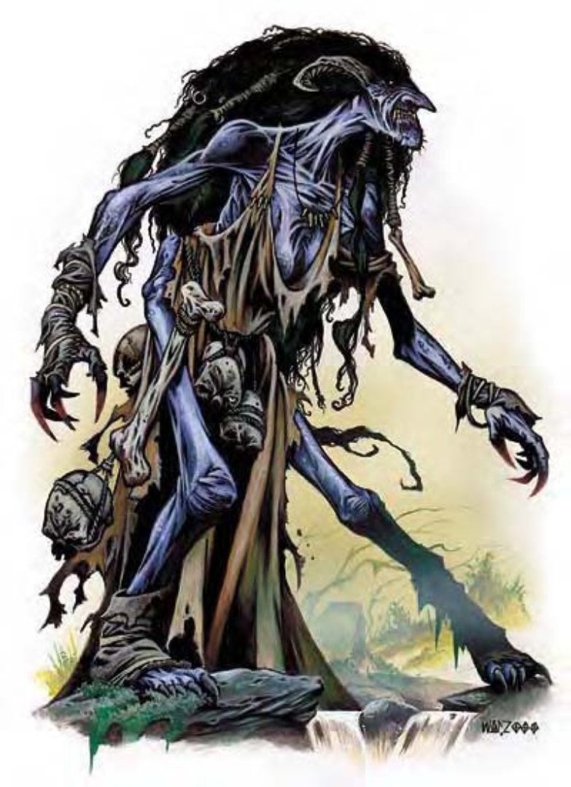

她们看起来像是丑到令人作呕的人类女性，有着一头漆黑散发与黄色锯齿。蓝紫色的皮肤上有道深色的伤痕，布满了肿瘤、脓包与伤口。眼光如烧炭般地炽热，发出阴沉的火红光芒。
老鬼婆来自黑帝斯域，毫不容情又极端邪恶，不断渴求着无辜男女的血肉与灵魂。
老鬼婆的身高体重与人类女性相同。
老鬼婆通晓深渊语、天界语、通用语及炼狱语。
只要觉得有胜算，老鬼婆就会马上攻击出现在眼前的善良阵营生物。
老鬼婆致命的尖牙可以扯裂防具与血肉。他们喜爱施展「睡眠术」，再勒住受害者。
在计算伤害减免时，老鬼婆的天生武器与持有武器都视为邪恶阵营，天生武器亦被视为魔法武器。
疾病 (特异)：恶魔热――啮咬，强韧检定DC=18，潜伏期1天；伤害1d6体质。若检定失败，则之后每天开始都需立刻进行一次强韧检定 (DC=18)，失败则受到1点体质伤害。豁免检定DC的调整值与体质调整值相同。
类法术能力：随意施展――「侦测混乱」、「侦测邪恶」、「侦测善良」、「侦测守序」、「侦测魔法」、「魔法飞弹」、「变形」(只对自身有效)、「衰弱射线」(DC=12)、「睡眠术」(DC=12)。施法者等级8。只要持有心石 (见下文)，老鬼婆亦可随意施展「同游灵界」(施法者等级16)。豁免检定DC的调整值与魅力调整值相同。
入梦 (超自然)：老鬼婆可以使用一种称为「心石」的特殊平安符来化为灵体，在邪恶或混乱生物头上盘旋以造访他们的梦境。一旦侵入成功，老鬼婆就会骑上他们的背直到天明。受害者在梦中会感到十分痛苦，醒来后受到1点吸取体质伤害。除非其他灵体敢勇敢站出来击败老鬼婆，才能阻止这种夜间干扰。
移形 (超自然)：老鬼婆可以化为任何体型为小型或中型之人形生物形态。
所有老鬼婆都携有一颗平安符，被称作「心石」，可立即治愈持有者身上的疾病。除此之外，心石在进行任何豁免检定时都赋予+2抗力加值 (已列于数据域位中)。一旦遗失这颗平安符，老鬼婆就无法施展「同游灵界」，直到再造一颗 (需花费一个月)。鬼婆之外的生物亦可获得「心石」力量，但使用之后，「心石」随即粉碎 (治愈一个疾病或进行一次检定后)。「心石」也不会让其他生物获得「同游灵界」的能力。完整的「心石」可售1800金币。
| 生命骰 | 8d8+32 (68HP) |
| 先攻 | +1 |
| 速度 | 20英尺 (4格) |
| 防御等级 | 22 (+1敏捷、+11天生)、接触11、措手不及21 |
| 基本攻击/擒抱 | +8 / +12 |
| 攻击 | 啮咬+12近战 (2d6+6附加疾病) |
| 全力攻击 | 啮咬+12近战 (2d6+6附加疾病) |
| 占据/触及 | 5英尺 / 5英尺 |
| 特殊攻击 | 类法术能力、入梦 |
| 特殊能力 | 伤害减免10/寒铁且魔法、对火焰、寒冷、魅惑、「睡眠术」及恐惧免疫、法术抗力25 |
| 豁免 | 强韧+12*、反射+9*、意志+10* |
| 属性 | 力量19、敏捷12、体质18、智力11、感知15、魅力12 |
| 技能 | 哄骗+12、专注+15、交涉+5、易容+1 (扮演+3)、威吓+14、聆听+15、骑术+12、察言观色+13、法术辨识+11、侦察+15 |
| 专长 | 警觉、战斗施法、骑乘战斗 |
| 环境 | 黑帝斯灰色荒域 |
| 组织 | 单独、一骑 (1，骑于梦魇上) 或巫妪会 (3，骑于梦魇上) |
| 宝藏 | 标准 |
| 阵营 | 总是中立邪恶 |
| 进化 | 9-16HD (中型) |
| 等级修正值 | ― |